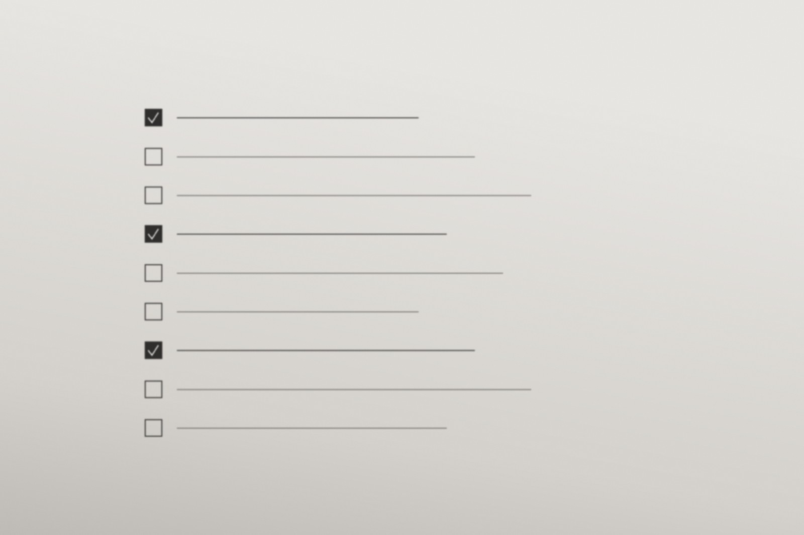

AI 辅助排障清单
2025 — 2026问题：宽带类工单里有三种类型占了将近一半的量——无法上网、网速异常、频繁掉线。它们不难，但排查路径很长，要在四个系统之间来回翻页，新人上手要六周。
做法：我把这三种工单的排查路径拆成结构化清单，接上内部知识库与历史工单检索。一线同事只要用一句话描述客户现象，就能拿到一份按概率排序的排查步骤，每一步都附上"为什么先查这个"。
结果：同类工单的平均处理时长下降约三成；新人独立处理同类问题的周期从六周缩短到三周。更重要的是，老同事开始主动往清单里补条目——这才是我判断"它被用起来了"的信号。